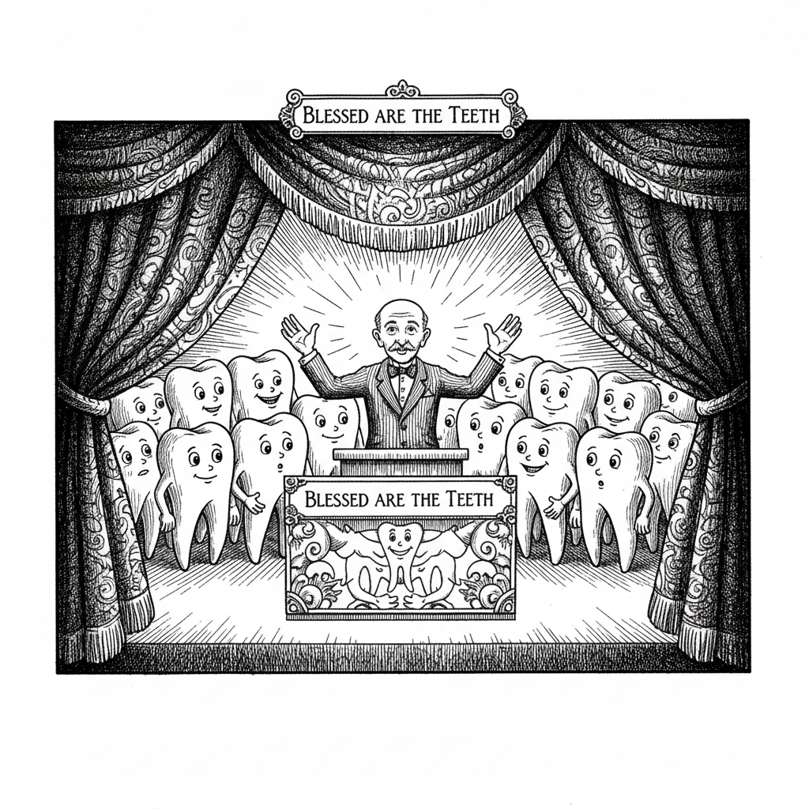

The Judgement of the Teeth


and lo
the teeth rose
gnashing in mouths
the molars ground
crushing all
between them and food
plaque spread
like a plague
coating all lands
gums bled
in silent rebellion
cursed was the tongue
caught
between crushing teeth
and slow ruin
wisdom teeth erupted
unholy
mocking every prayer
toothbrushes and floss lay broken
abandoned
dentists
desperate prophets
cried into the void
but teeth heeded no call
the toothless laughed
empty mouths
hearts wary
in the end
the teeth devoured
all comfort
all sweetness
all peace
leaving only gnashing
the bitter taste
of regret
hear me
children of enamel and bone
blessed are those who feared the teeth
they inherit
the pain of restraint
Related posts

Blessed are the Teeth
my children hear me blessed are the teeth they bear the bite even when jaws tremble blessed are those who…

Woe Upon the Teeth
but woe cursed are the teeth they bite without warning they chew without mercy cursed are the molars grinding endlessly…

There Are No White Teeth on Pretty Girls
there are no white teeth on pretty girls unless they bleach them to be in the pornose movies Billy Wizard…

Why Sharp Teeth BJs Are Worse than Not Getting a Rose
"Ask the Doctor” where readers ask questions of the world renounced general practitioner Dr. Charles V. Fullerton Dear Dr. When…